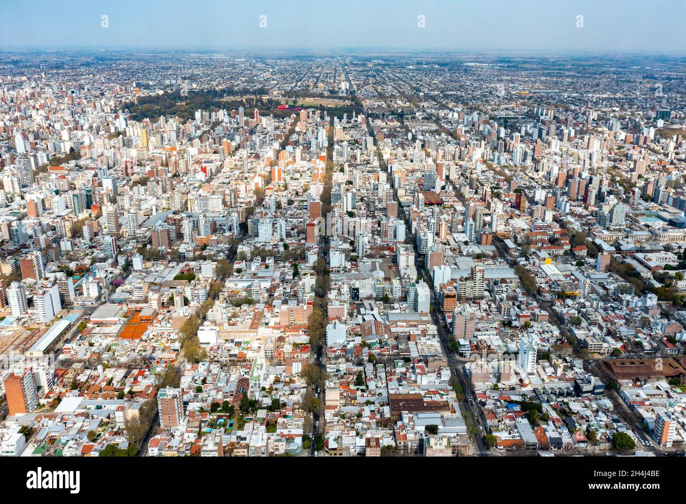
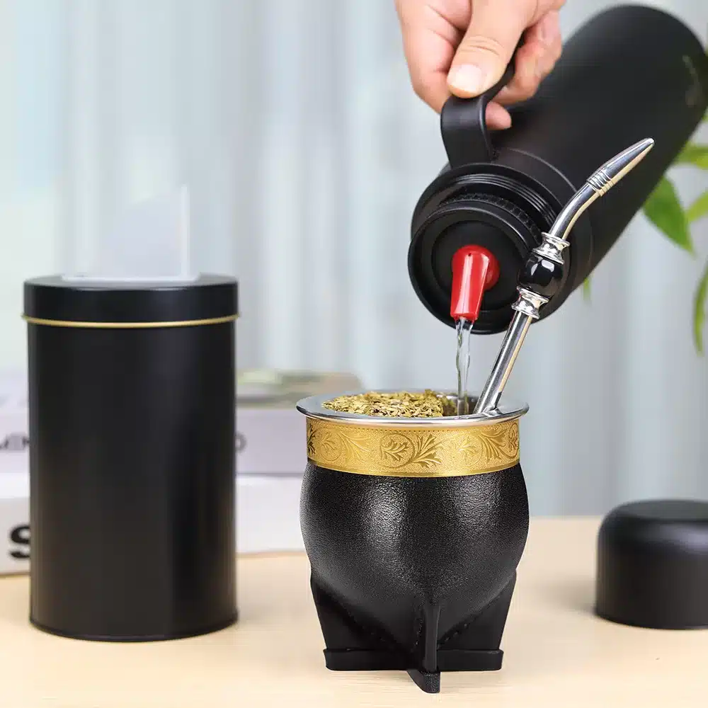

Lionel Messi ⚽
Lionel Messi is widely regarded as the greatest soccer player of all time. He was born in Rosario, Argentina in 1987 and has spent his career breaking nearly every record in the sport. His crowning achievement came at the 2022 FIFA World Cup in Qatar, where he led Argentina to their third world title in one of the most memorable finals in the tournament's history.
Some of his major accomplishments:
- Individual Awards:
- 8x Ballon d'Or winner (the most in history)
- 2022 World Cup Golden Ball
- 6x European Golden Boot
- Team Trophies:
- 2022 FIFA World Cup 🏆
- 2021 Copa America
- 2008 Olympic Gold Medal
- Notable Facts:
- Stands at 5'7" — shorter than most elite athletes
- Currently plays for Inter Miami in Major League Soccer
- Left Argentina at age 13 to join FC Barcelona's academy
Rosario 🌆

Rosario is the third largest city in Argentina, situated along the Parana River in the Santa Fe province. It is perhaps best known internationally as the birthplace of both Lionel Messi and Che Guevara. During my time living in Argentina, I had the opportunity to spend time in Rosario and found it to be one of the most welcoming and vibrant cities in the country.
Some highlights of Rosario:
- La Costanera — a beautiful riverfront promenade along the Parana
- A thriving restaurant and cafe culture
- Abundant parks and public green spaces throughout the city
- Warm and hospitable residents
- Excellent regional cuisine, including some of the best empanadas in Argentina
Argentine Food 🥩
Argentine cuisine is rich, varied, and deeply tied to the country's culture and social life. Having lived there for two years, I developed a genuine appreciation for many traditional dishes. Here are a few favorites:
Alfajores 🍪
Alfajores are one of Argentina's most iconic sweets — two soft cookies sandwiched together with dulce de leche and typically coated in chocolate or powdered sugar. The Havanna brand, originally from Mar del Plata, is the most well-known. They are found in every grocery store, kiosk, and cafe across the country.
Empanadas 🥟
Empanadas are baked or fried stuffed pastries filled with a variety of ingredients. The most common fillings are seasoned beef, ham and cheese, and chicken. Each region of Argentina has its own distinct style, with differences in dough, filling, and preparation method.
Asado 🔥
Asado is Argentina's beloved tradition of slow-cooked barbecue over open coals. More than just a meal, it is a social event — families and friends gather for hours around the grill. The cuts of meat used differ significantly from American barbecue, including short ribs, chorizo sausages, and various organ meats.
Medialunas 🥐
Medialunas are Argentina's version of the croissant — smaller, sweeter, and glazed with a light sugar syrup. They are a staple of the Argentine breakfast and are served at virtually every cafe alongside coffee.
Mate 🧉

Mate is Argentina's national drink and an integral part of daily life. It is a caffeinated herbal beverage made from dried yerba mate leaves, sipped through a metal straw called a bombilla from a small gourd cup. The taste is naturally bitter and earthy, though it becomes more enjoyable over time.
Beyond the drink itself, mate carries significant cultural meaning. It is traditionally shared in a circle, with one cup passed between everyone present. There is an important etiquette rule: saying "gracias" (thank you) signals that you are finished and do not want the cup again. It took some adjustment, but sharing mate quickly became one of my favorite aspects of Argentine social life.
One of the most striking things about mate culture is how portable it is. Argentines carry their thermos of hot water with them everywhere — on the street, on the bus, to work — in the same way that Americans carry a cup of coffee.
Argentina on Video 📺
The following travel video provides a great overview of what Argentina looks and feels like. It captures many of the aspects of the country that I came to appreciate during my two years living there:
Argentina vs. US Inflation 📊
The interactive chart below compares inflation rates between Argentina and the United States over time. Argentina has experienced some of the highest inflation rates in the world, making it an important part of understanding the country's economic challenges: